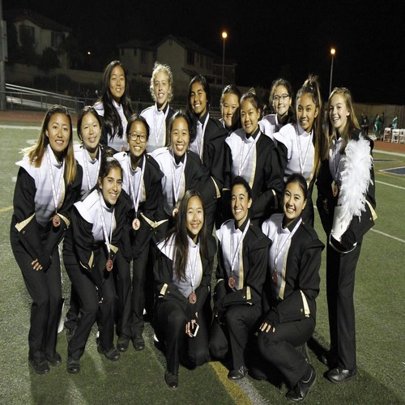
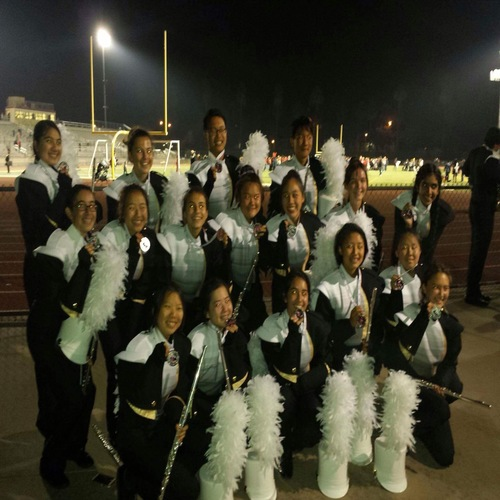
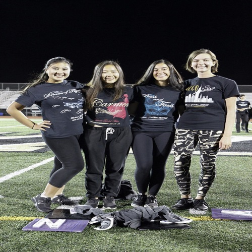
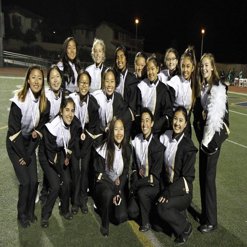
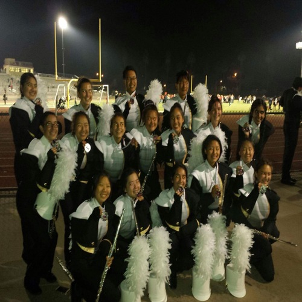
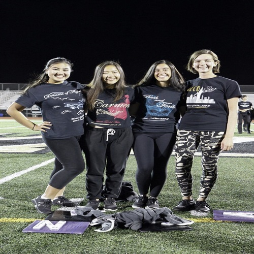
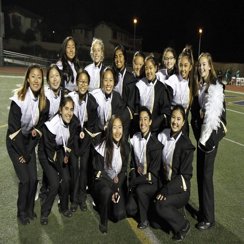
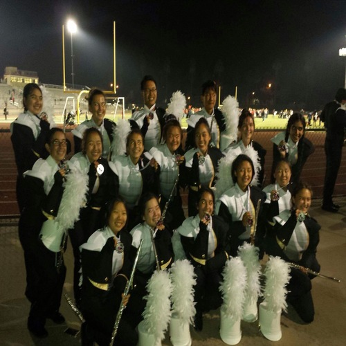
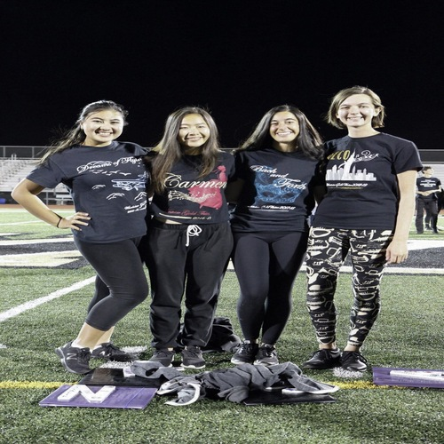

Limin Chen
My name is Limin and I currently attend the University of California, Riverside as a psychology major. I am from San Diego, California and have lived there for 13 years. I was born in Guangzhou, China and lived there for 5 years until my family and I moved the United States. I can speak 3 languages fluently which includes English, Mandarin, and Cantonese. I studied French for 4 years in high school and can speak it relatively well but not as fluent as the other languages.I plan to minor in either business or statistics and after completing my bachelor's degree, I plan to attend graduate school and earn a masters in industrial organizational psychology.I wanted to major in psychology mainly because I found human behavior to be very interesting and I wanted to use the knowledge that I obtain to help those who may be struggling with psychological disorders.I am not exactly sure what I want to as a career but all I know is that I want to be able to help others with whatever I do.
I attended Westview High School and graduated in 2019. During high school, I took 5 AP classes: AP European History, AP United States History, AP Calcuclus AB, and AP Psychology. Although it was stressful to take those classes at the time, it gave me an advantage going into college because it gave me credit for 32 units. As for my extracurricular, I did competitive marching band for four years. Three of the four years, our band was able to medal at the championships for our division. I also took on a leadership for band. Band taught me a lot about perseverance and how it can help me achieve the goals I aim for. It also taught me a lot about team work and how to develop long lasting friendships. With the leadership position I took on, it gave me the experience of organizing one of the most important events for the program which was our recruitment night. It was stressful but it taught me how to manage time and how to be better at communicating with others. Taking AP classes and doing band at the same time really forced me to have better time management because I would always have practice for band and very little time to do homework.
In my free time, I like to hang out with my friends and go on spontaneous trips to explore different places. I also love to go and try new food places or boba shops. Something I love to do to relax is sitting at the beach and watch the sunset; I find this activity to be very calming and if I ever feel stressed, this makes me forget about everything and clear my mind. I also enjoy taking pictures whether it is for others or just taking a nice picture or a beautiful scenery. People say that you should live in the moment but for me, I think it is important to capture the beautiful moments in life that you can look back at one when you get older.
Experience
Bakery Worker
• Prep work for cakes and pastries
• Made and baked cakes
• Washing dishes
VP of Recruitment
• Organized 8th grade band night for a football game
• Managed the social media accounts for Westview Gold
• Visited middle schools to introduce them to high school band
Voluteer
• Helped separate fruits and vegetables
• Packaged fruits and vegetables
• Sort out donated food
Education
UC Riverside
Portfolio
.jpg) 







